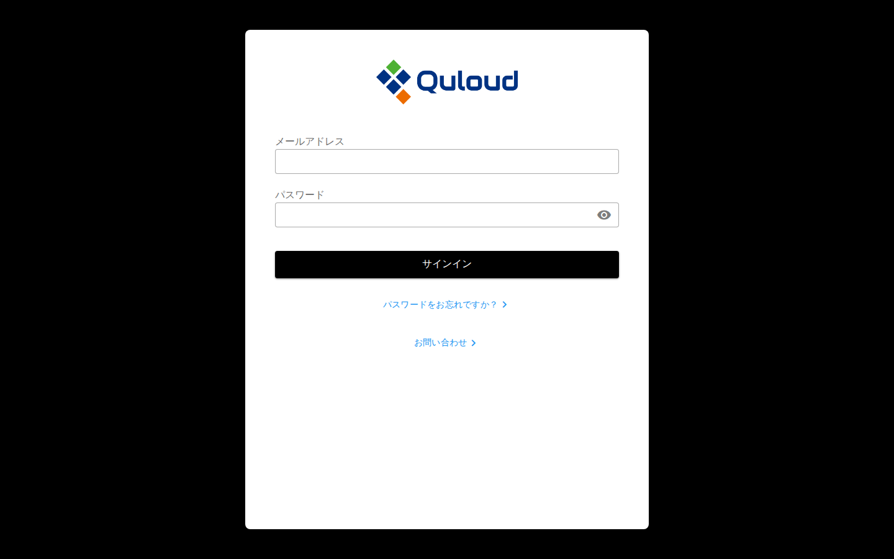
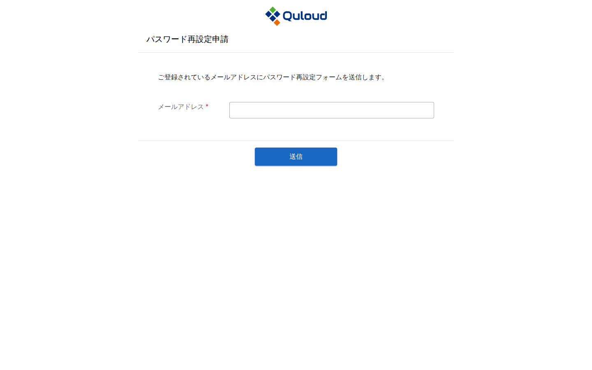
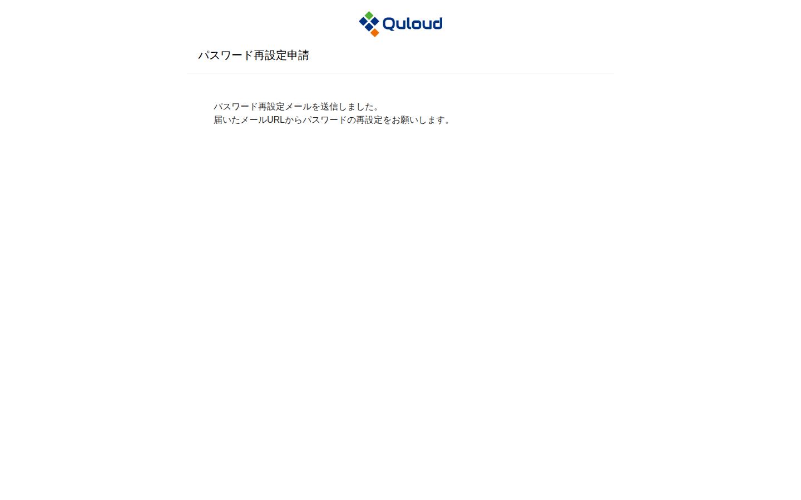
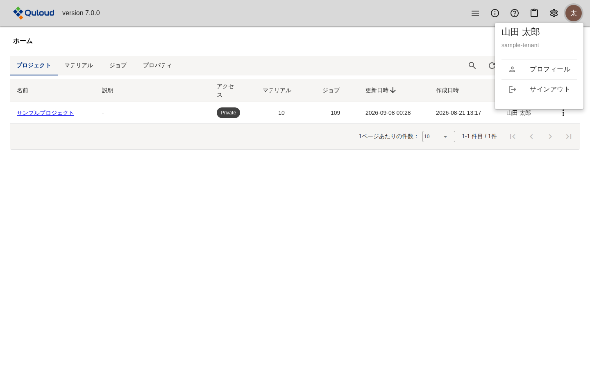

3. サインイン・サインアウト
注釈
本章は Quloud Ver.7.0 を対象としています。記載内容の確認日は 2026 年 9 月 8 日です。
サインインするには、以下の URL にアクセスしてください。
https://2g.quloud-platform.com/sign_in
次のサインイン画面が表示されます。

図 3.1 サインイン画面
3.1. サインイン
登録したメールアドレスと設定したパスワードを入力し、「サインイン」ボタンを押します。 パスワード入力欄の右端にある目のアイコンを押すと、入力したパスワードを表示して確認できます。
サインインすると、ダッシュボードに移ります。

図 3.2 サインイン直後のダッシュボード
ダッシュボードの詳細は ダッシュボード（トップ画面） の章をご参照ください。
3.2. パスワードを忘れたときは
サインイン画面下部の「パスワードをお忘れですか？」を押すと、別のタブでパスワード 再設定申請画面が開きます。

図 3.3 パスワード再設定申請画面
登録済みのメールアドレスを入力して「送信」ボタンを押すと、そのアドレスにパスワード 再設定用のメールが送信されます。

図 3.4 申請の送信後の画面
届いたメールに記載された URL を開き、新しいパスワードを設定してください。
3.3. お問い合わせ
サインイン画面下部の「お問い合わせ」を押すと、別のタブで弊社ウェブサイトの お問い合わせページが開きます。サインインしなくても利用できます。
サインイン後は、アプリケーション内のお問い合わせフォームを使えます。カテゴリを選んで タイトルと内容を記入し、確認画面を経て送信する形式で、サインイン画面からのものとは 別のものです。手順は ヘッダーメニュー（各種管理） の章をご参照ください。
3.4. サインアウト
ヘッダー右端のアカウントのアイコンを押すとメニューが開きます。「サインアウト」を 押してください。

図 3.5 アカウントメニュー
このメニューには、サインインしているユーザーの氏名と所属テナント名も表示されます。 「プロフィール」からは氏名・役職・表示言語などを確認・変更できます （ヘッダーメニュー（各種管理） の章を参照）。